第 12 章 视频处理（视频IO以及Video模块）
这一章处理「会动的东西」：读写视频文件，比较两段视频的差异，从静止背景里分离出运动目标， 做颜色聚类分割，跟踪一个移动的目标，最后估计像素的运动方向。
一个贯穿全章的坑：cvMat 是浅拷贝
R 里 b = a 对普通向量是复制，对 cvMat 不是。cvMat 内部是一个 externalptr，
赋值只是把同一个指针又绑了一个名字。后面在 b 上画一个矩形，a 也跟着变。
ref = cv_imread("images/stuff.jpg")
alias = ref #浅拷贝：两个名字，一份像素
copy = cv_copyTo(ref) #深拷贝：真的复制了一份
#在 alias 和 copy 上各画一个矩形
cv_rectangle(alias,c(0,0,100,100),c(0,0,255),-1)## <cvMat> 480 x 640, CV_8UC3, 3 channels## <cvMat> 480 x 640, CV_8UC3, 3 channels#看左上角像素：ref 被 alias 改掉了，cv_copyTo 的副本没影响 ref
list(ref = as_array(ref,numeric = TRUE)[1,1,],
copy = as_array(copy,numeric = TRUE)[1,1,])## $ref
## [1] 0 0 255
##
## $copy
## [1] 0 0 255
ref左上角变成了(0,0,255)——因为alias和ref是同一块内存。 想「复制一张图再画」，必须真的把像素搬一份，用cv_copyTo()。这条规则影响全章：凡是「在原图上画框、又想保留原图」的地方，都要先
cv_copyTo()。
12.1 读入视频文件并打开
cvVideoCapture() 对应 C++ 的 cv::VideoCapture。第二个参数是后端编号，
不填就走 CAP_ANY，让 OpenCV 按顺序试。
#视频文件路径。换成自己的文件即可
vid_file = "video/vtest.avi"
#打开视频
cap = cvVideoCapture(vid_file)
#是否打开成功
cap$isOpened()## [1] TRUE#到底用了哪个后端——这一行在排查「打不开」时最有用。
#注意 getBackendName() 只能对**已经打开**的 VideoCapture 调用，
#没打开时 OpenCV 会直接抛 (-215:Assertion failed) api != 0，
#所以这里先判一下 isOpened()，免得「想排查」反而先把脚本跑挂了
if(isTRUE(cap$isOpened())) cap$getBackendName() else "打不开：没有可用的 videoio 后端"## [1] "FFMPEG"#视频的基本参数
c(frames = cap$get(CAP_PROP_FRAME_COUNT),
fps = cap$get(CAP_PROP_FPS),
width = cap$get(CAP_PROP_FRAME_WIDTH),
height = cap$get(CAP_PROP_FRAME_HEIGHT))## frames fps width height
## 795 10 768 576如果
isOpened()返回FALSE，先别怀疑路径。视频能不能打开，取决于编译 OpenCV 时带进了哪些 videoio 后端。 用
cv_getBuildInformation()能看到编译时的选择，但那只是「构建时的声明」， 真正能用的是链接进来的那几个。可以用cap$getBackendName()看实际选中了谁。常见情况：
- 有 FFmpeg：
.mp4、.avi、.flv、.mkv基本都能读，最省事。- 只有 DirectShow（Windows）：能开摄像头，但按文件名开文件会被拒绝， 报
backend is generally available but can't be used to capture by name。- 只有 CV_MJPEG：只能读 MJPEG 编码的 AVI。别的格式一律打不开。
判断自己属于哪种，可以直接试：
返回
FALSE就是没编进 FFmpeg。这时要么换一个带 FFmpeg 的构建， 要么把素材转成 MJPEG 的 AVI 再用CAP_OPENCV_MJPEG打开。 转码一条命令就够（需要系统里装了 ffmpeg）：ffmpeg -i vtest.avi -c:v mjpeg -q:v 3 vtest_mjpg.avi本章的代码只写
cvVideoCapture(路径)，不带后端参数，就是为了让它 在两种环境下都能跑——CAP_ANY会自动挑一个能用的。
Windows 上还有一个更隐蔽的现象：DLL 没跟着装。
OpenCV 的 FFmpeg 后端是一个独立的动态库
opencv_videoio_ffmpeg<版本>_64.dll（OpenCV 5.0 对应opencv_videoio_ffmpeg500_64.dll），它不会被静态链进ROpenCV.dll。这个 DLL 必须和ROpenCV.dll放在同一个目录 （<R库路径>/ROpenCV/libs/x64/），否则：
cv_getBuildInformation()里 FFMPEG 那一行照样显示YES (prebuilt binaries)——那只是构建时的声明，不代表运行时能加载；cvVideoCapture(路径)$isOpened()静默返回FALSE，不报任何错；- 此时再调
getBackendName()，就会撞上(-215:Assertion failed) api != 0——因为压根没有后端被选中。判断方法：
ls <R库路径>/ROpenCV/libs/x64/里除了ROpenCV.dll还应该有opencv_videoio_ffmpeg500_64.dll（约 30 MB）。 缺了就补上，isOpened()立刻变TRUE、getBackendName()返回"FFMPEG"。这一条在本机实测过：补 DLL 之前
vtest.avi/mda.mp4/slow.flv/Megamind01.avi四个文件、CAP_ANY/CAP_FFMPEG/CAP_OPENCV_MJPEG/CAP_DSHOW四种后端全部打不开；补上之后CAP_ANY自动选中 FFMPEG，vtest.avi读出 576×768 的三通道帧。
读一帧。注意新的 read() 不需要先准备一个 Mat 再传进去（旧接口是
cap$read(frame) 的出参写法），它直接把这一帧作为返回值给你：
## [1] "cvMat"## [1] 576 768 3读到末尾会返回什么？ 这是本章第一个必须记住的细节：
## [1] TRUE## [1] 576 768 3## [1] TRUE## [1] 0 0## [1] FALSE## [1] FALSE末尾返回的是
0×0的cvMat，不是NULL。 同时它身上还挂着一个attr(x, "value")，TRUE/FALSE就是这一帧读没读到。这是这个包的通用约定：一个函数既有返回值、又有「成功与否」要报告时， 把标志挂在返回值的
attr(x, "value")上。cv_findChessboardCorners()也是同样的做法（08 章用过）。所以判断「读完了」有两种等价写法：
但绝不能写
while(!is.null(cap$read()))——条件永远成立，而且每一轮都 拿到一张空图，循环停不下来。这个设计是跟 C++ 对齐的：
VideoCapture::read()返回bool，读失败时输出 Mat 被 release 成空矩阵。R 这边把「成功标志」和「图像」合并成一个返回值， 于是「失败」既表现为空矩阵，也表现为attr为FALSE。
## [1] TRUE## [1] 795#隔一段取一帧，看看这段视频拍的是什么
keep = c(1,200,400,600)
frames = vector("list",length(keep))
for(k in seq_along(keep)){
cap$set(CAP_PROP_POS_FRAMES,keep[k]-1)
frames[[k]] = cap$read()
}
cap$release()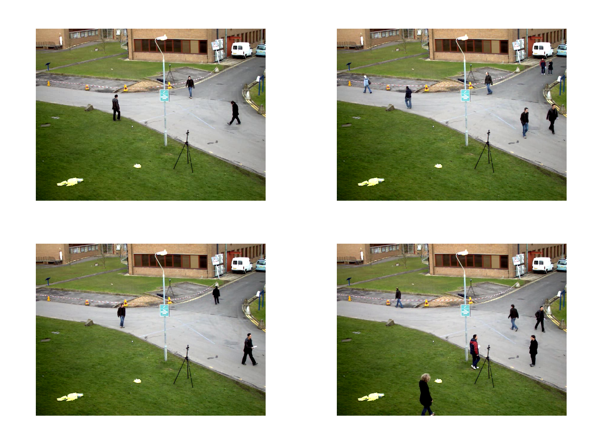
实时播放
cv_imshow() + cv_waitKey() 是 OpenCV 自带的窗口，会把视频真正「播」出来。
它需要一个图形界面，所以在 Rmd 里不执行，只把写法留在这里：
cap = cvVideoCapture(vid_file)
#帧率决定每帧停留多久（毫秒）
pauseTime = 1000/cap$get(CAP_PROP_FPS)
cv_namedWindow("frame",WINDOW_AUTOSIZE)
repeat{
frame = cap$read()
if(prod(dim(frame)) == 0) break
cv_imshow("frame",frame)
#按 Esc（键码 27）退出
if(cv_waitKey(pauseTime) == 27) break
}
cap$release()
cv_destroyAllWindows()
cv_waitKey(n)会阻塞 n 毫秒等键盘输入，返回按下的键码，没按键返回 -1。 它同时也是「刷新窗口」的唯一时机——不调cv_waitKey()，cv_imshow()画的 东西根本不会显示出来。这是 OpenCV 的老规矩。
12.2 视频相似性度量
比较两段视频，最直接的做法是逐帧比较。下面两个指标都只需要两张图， 把它们套进循环就变成了「视频相似度」。
12.2.1 PSNR（峰值信噪比）
\[ \begin{aligned} MSE &= \frac{1}{c\times m\times n} \sum(I_1 - I_2)^2 \\ PSNR &= 10 \times \lg \left( \frac{MAX_I^2}{MSE} \right) \end{aligned} \]
\(I_1\)、\(I_2\) 是待比较的两张图，行数列数分别是 \(m\)、\(n\)，通道数 \(c\)； \(MAX_I\) 是像素的最大可能取值，8 位无符号整数就是 255。
getPSNR = function(I1,I2){
#摊成 R 数组再算，别在 cvMat 上做逐元素运算
a1 = as_array(I1,numeric = TRUE)
a2 = as_array(I2,numeric = TRUE)
#平方误差求和（通道也算进去）
sse = sum((a1-a2)^2)
#两张图一模一样时 MSE 为 0，PSNR 是无穷大
if(sse <= 1e-10) return(Inf)
mse = sse/prod(dim(a1))
10*log10(255^2/mse)
}单通道测试：3×3 的图，只有一个像素从 5 变成 0。
img1_mat = matrix(1:9,nr = 3,nc = 3)
img1 = Mat(3,3,CV_8UC1)
img1[] = img1_mat
#和自己比，误差为 0
getPSNR(img1,img1)## [1] Inf## [1] 43.69## [1] 43.69三通道测试。三个通道都差同一个像素，误差总量变成 3 倍，但分母也变成 3 倍， 所以 PSNR 不变：
arr1 = array(0,dim = c(3,3,3))
arr2 = array(0,dim = c(3,3,3))
for(ch in 1:3){
arr1[,,ch] = img1_mat
arr2[,,ch] = img2_mat
}
img1 = Mat(3,3,CV_8UC3)
img1[] = arr1
img2 = Mat(3,3,CV_8UC3)
img2[] = arr2
getPSNR(img1,img2)## [1] 43.69
Mat(3,3,CV_8UC3)的[]赋值是按通道铺开的：先写完全部 B 通道的 9 个值， 再写 G，再写 R。R 的三维数组array(0,dim=c(3,3,3))按列优先展平之后， 正好也是「先第一层、再第二层」，两者对得上，所以直接m[] = arr就行。
12.2.2 SSIM（结构相似性）
SSIM 逐点算一个相似度图，再取平均。核心是四个量：两张图的局部均值 \(\mu_1,\mu_2\)、 局部方差 \(\sigma_1^2,\sigma_2^2\)、以及协方差 \(\sigma_{12}\)：
\[ \text{SSIM} = \frac{(2\mu_1\mu_2+C_1)(2\sigma_{12}+C_2)} {(\mu_1^2+\mu_2^2+C_1)(\sigma_1^2+\sigma_2^2+C_2)} \]
「局部」用高斯模糊实现。C1 = (0.01×255)^2、C2 = (0.03×255)^2 是为了防止
分母接近 0 时数值爆炸。
#把 R 数组塞进 32 位浮点的 Mat——后面的平方、乘积会溢出 8 位
as_mat32 = function(a){
d = dim(a)
ch = if(length(d) == 3) d[3] else 1
m = Mat(d[1],d[2],if(ch == 1) CV_32FC1 else CV_32FC3)
m[] = as.vector(a)
m
}
getMSSIM = function(i1,i2){
C1 = 6.5025 #(0.01*255)^2
C2 = 58.5225 #(0.03*255)^2
a1 = as_array(i1,numeric = TRUE)
a2 = as_array(i2,numeric = TRUE)
#局部均值：11×11 高斯窗，sigma = 1.5
blur = function(m) as_array(cv_GaussianBlur(m,c(11,11),1.5),numeric = TRUE)
mu1 = blur(as_mat32(a1))
mu2 = blur(as_mat32(a2))
mu1_2 = mu1^2
mu2_2 = mu2^2
mu1_mu2 = mu1*mu2
#局部方差、协方差：先算 E[x^2] 再减 E[x]^2
s1_2 = blur(as_mat32(a1^2)) - mu1_2
s2_2 = blur(as_mat32(a2^2)) - mu2_2
s12 = blur(as_mat32(a1*a2)) - mu1_mu2
ssimg_map = ((2*mu1_mu2 + C1)*(2*s12 + C2))/
((mu1_2 + mu2_2 + C1)*(s1_2 + s2_2 + C2))
#多通道就每个通道各给一个值
if(length(dim(ssimg_map)) == 2) mean(ssimg_map)
else apply(ssimg_map,3,mean)
}## [1] 1## [1] 0.9037#三通道，返回 B G R 三个值
img1 = Mat(3,3,CV_8UC3)
img1[] = arr1
img2 = Mat(3,3,CV_8UC3)
img2[] = arr2
getMSSIM(img1,img2)## [1] 0.9037 0.9037 0.90373×3 的图配 11×11 的高斯窗，听起来不合理——窗口比图还大。OpenCV 会用边界 延拓把窗口撑开，所以能算，但结果没有实际意义（整张图只有一个「局部」）。 这里只是拿它验证公式跑得通；真正有意义的是下面的整帧视频。
逐帧比较两段视频
vid_ref = "video/Megamind01.avi" #参考视频
vid_tst = "video/Megamind_bugy01.avi" #待测视频
cap_ref = cvVideoCapture(vid_ref)
cap_tst = cvVideoCapture(vid_tst)
c(ref_opened = cap_ref$isOpened(),tst_opened = cap_tst$isOpened())## ref_opened tst_opened
## TRUE TRUE#分辨率必须一致，否则没法逐像素比
c(ref = paste(cap_ref$get(CAP_PROP_FRAME_WIDTH),cap_ref$get(CAP_PROP_FRAME_HEIGHT)),
tst = paste(cap_tst$get(CAP_PROP_FRAME_WIDTH),cap_tst$get(CAP_PROP_FRAME_HEIGHT)))## ref tst
## "720 528" "720 528"#只比前 100 帧：逐帧摊数组比较费时间，够说明问题就行
n_cmp = 100
psnr_v = numeric(n_cmp)
for(i in seq_len(n_cmp)){
f1 = cap_ref$read()
f2 = cap_tst$read()
if(prod(dim(f1)) == 0 || prod(dim(f2)) == 0) break
psnr_v[i] = getPSNR(f1,f2)
}
cap_ref$release()
cap_tst$release()
summary(psnr_v)## Min. 1st Qu. Median Mean 3rd Qu. Max.
## 8.17 38.87 39.33 Inf 40.14 Inf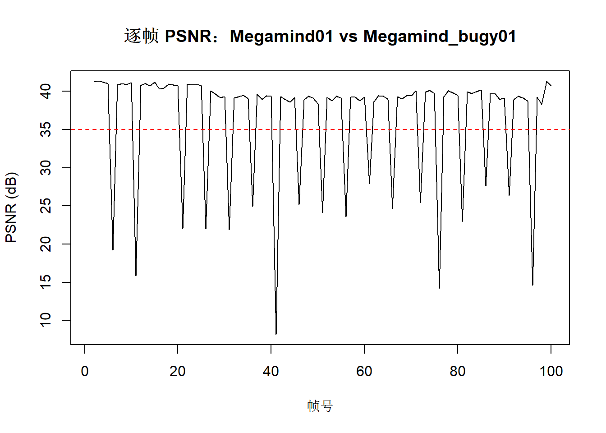
这条曲线就是「哪一帧差别大」的直观答案。PSNR 越高越像，一般 35 dB 以上 肉眼很难看出差别；掉到 30 dB 以下就是明显不一样了。
红色虚线是常用的报警阈值 35 dB。低于这个阈值就要考虑「这一帧要不要 再算一遍 SSIM」——SSIM 比 PSNR 慢得多，没必要每帧都算。
## [1] TRUE## [1] TRUE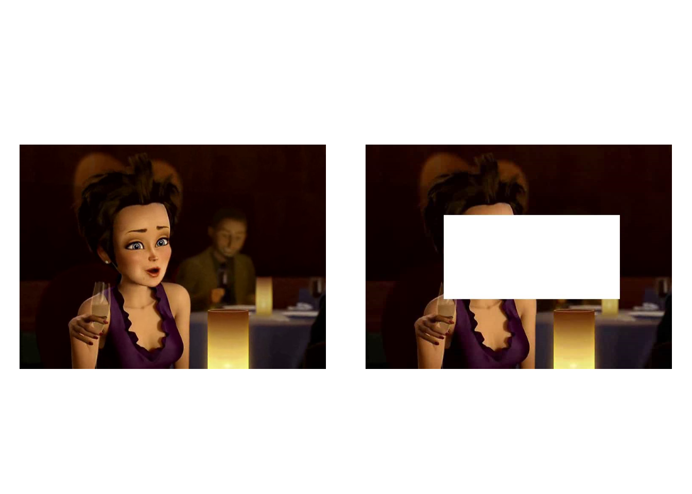
## worst_frame psnr mssim_BGR1 mssim_BGR2 mssim_BGR3
## 41.0000 8.1700 0.7261 0.7748 0.8058可以一边播一边在控制台打印 PSNR：
cap_ref = cvVideoCapture(vid_ref)
cap_tst = cvVideoCapture(vid_tst)
psnrTriggerValue = 35
frameNum = 0
repeat{
f1 = cap_ref$read()
f2 = cap_tst$read()
if(prod(dim(f1)) == 0 || prod(dim(f2)) == 0) break
frameNum = frameNum + 1
psnrV = getPSNR(f1,f2)
res = paste0("Frame: ",frameNum," ",round(psnrV,2),"dB")
if(is.finite(psnrV) && psnrV < psnrTriggerValue){
mssimV = getMSSIM(f1,f2)
res = paste0(res,"\tMSSIM: B ",round(mssimV[1]*100,2),
"% G ",round(mssimV[2]*100,2),"% R ",round(mssimV[3]*100,2),"%")
}
cat(res,"\n")
cv_imshow("参考视频",f1)
cv_imshow("检测视频",f2)
if(cv_waitKey(30) == 27) break
}12.3 背景减除
背景减除（Background Subtraction）用一台固定不动的相机，从视频里把 「动的东西」抠出来：给每一帧算一张前景掩码，白色是运动目标，黑色是背景。
OpenCV 里最常用的是 MOG2（高斯混合模型）：
createBackgroundSubtractorMOG2(
int history = 500, #建模用多少帧
double varThreshold = 16, #马氏距离阈值
bool detectShadows = TRUE #是否标出阴影
)history：过往帧数。设成 1 就退化成「两帧差」。varThreshold：像素与该像素的背景模型之间的马氏距离阈值。越小越敏感， 光照一变就报前景；越大越迟钝，只有明显偏离模型的才算前景。detectShadows：是否把阴影标成灰色（值 127）。做二值掩码时建议关掉，快一些。
#创建 MOG2 分离器
mog2 = cv_createBackgroundSubtractorMOG2(history = 500,
varThreshold = 16,
detectShadows = FALSE)
class(mog2)## [1] "cvBackgroundSubtractorMOG2"
## [2] "cvObject"MOG2 是在线学习的：模型随着帧不断更新，头几帧里所有像素都「没见过」， 于是全被当成前景。必须先喂一段视频让它收敛。
cap = cvVideoCapture(vid_file)
#一边读一边更新模型，每 10 帧记一次前景占比
ratio = numeric(0)
for(i in 1:100){
frame = cap$read()
fgmask = mog2$apply(frame,-1) #-1 表示让算法自己决定学习率
if(i %% 10 == 0)
ratio = c(ratio,mean(as_array(fgmask,numeric = TRUE) > 0))
}
cap$release()
round(ratio,4)## [1] 0.0103 0.0242 0.0176 0.0206 0.0251 0.0218 0.0250 0.0263
## [9] 0.0273 0.0262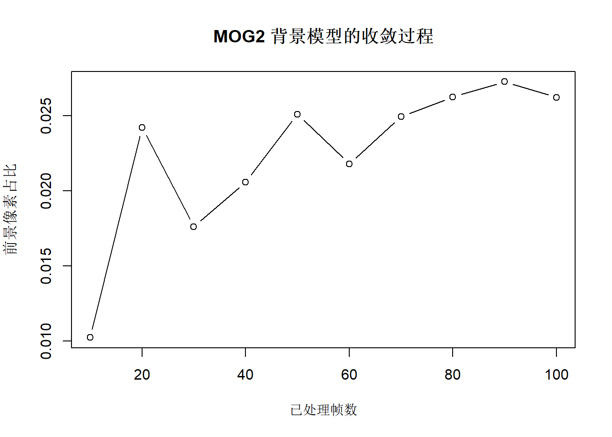
前景占比从接近 1 掉到百分之几，说明背景模型收敛了。这个数字表明 「直接拿第一帧当背景」是行不通的——第一帧本身就是「全部前景」。
apply()的第二个参数是学习率：-1表示自动，0表示冻结模型（不再学习），1表示把这一帧整个当成背景。想「锁住」一个已经学好的背景，就传0。
现在的 fgmask 是第 100 帧的前景掩码。先做一次形态学开运算去掉噪点：
#1×5 的竖条核：去掉横向的细碎噪点，保留竖直的人形
line_ele = cv_getStructuringElement(MORPH_RECT,c(1,5))
fgmask = cv_morphologyEx(fgmask,MORPH_OPEN,line_ele)
c(dim = dim(fgmask),fg_ratio = round(mean(as_array(fgmask,numeric = TRUE) > 0),4))## dim1 dim2 fg_ratio
## 576.0000 768.0000 0.0163## [1] 48## Min. 1st Qu. Median Mean 3rd Qu. Max.
## 0.0 0.0 0.0 130.6 13.4 2213.0#在原图的副本上画框——不复制的话原图会被画花
vis = cv_copyTo(frame)
for(p in ct$contours){
#太小的块当噪声丢掉
if(cv_contourArea(p) < 150) next
#最小外接旋转矩形：c(cx, cy, w, h, angle)
rr = cv_minAreaRect(p)
#椭圆内接在这个旋转矩形里，比正矩形贴合人形
cv_ellipse(vis,rr,c(0,255,0),2)
#中心点
cv_circle(vis,rr[1:2],2,c(255,0,0),2)
}
sum(areas > 150)## [1] 6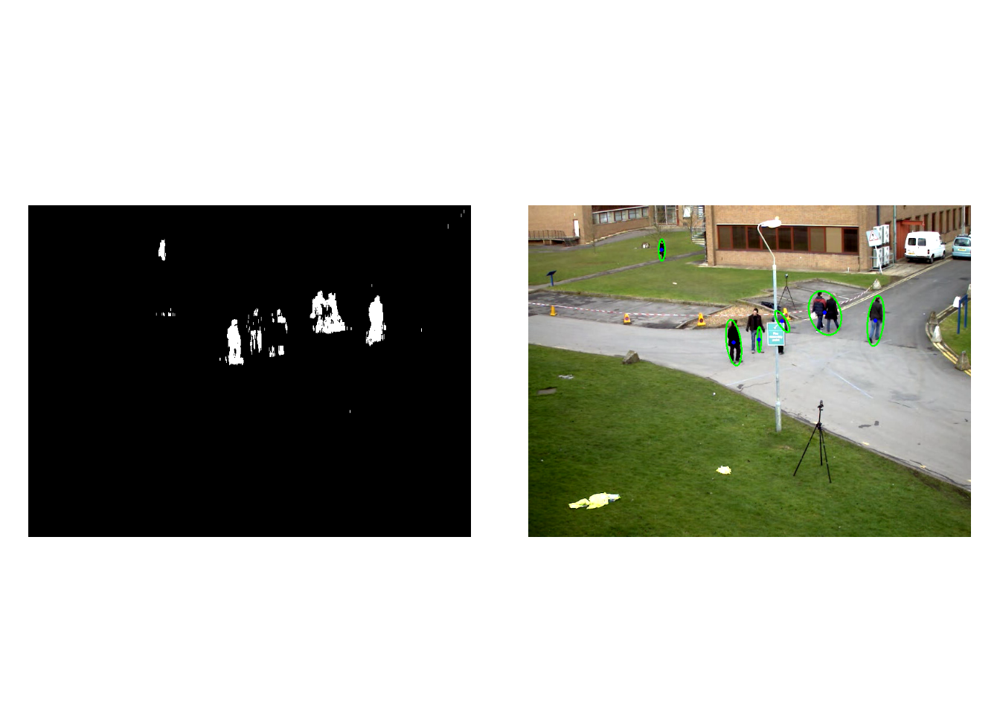
#cv_boxPoints 把旋转矩形展开成四个角点
rr_big = cv_minAreaRect(ct$contours[[which.max(areas)]])
matrix(as_array(cv_boxPoints(rr_big),numeric = TRUE),ncol = 2)## [,1] [,2]
## [1,] 476.0 156.6
## [2,] 527.2 140.2
## [3,] 551.2 215.0
## [4,] 500.0 231.4实时显示版本：
cap = cvVideoCapture(vid_file)
pauseTime = 1000/cap$get(CAP_PROP_FPS)
cv_namedWindow("frame",WINDOW_AUTOSIZE)
cv_namedWindow("mask",WINDOW_AUTOSIZE)
repeat{
frame = cap$read()
if(prod(dim(frame)) == 0) break
fgmask = mog2$apply(frame,-1)
fgmask = cv_morphologyEx(fgmask,MORPH_OPEN,line_ele)
cv_imshow("frame",frame)
cv_imshow("mask",fgmask)
if(cv_waitKey(pauseTime) == 27) break
}
cap$release()12.4 MeanShift 图像分割
MeanShift 滤波把每个像素替换成「它邻域内颜色相近的像素的均值」，迭代几次之后 同色区域会被抹平成一块一块的色斑——这就是分割。
src = cv_imread("images/stuff.jpg")
#sp：空间半径（像素），sr：颜色半径，maxLevel：金字塔层数
ms = cv_pyrMeanShiftFiltering(src,sp = 19,sr = 22,maxLevel = 2)
c(dim = dim(ms))## dim1 dim2 dim3
## 480 640 3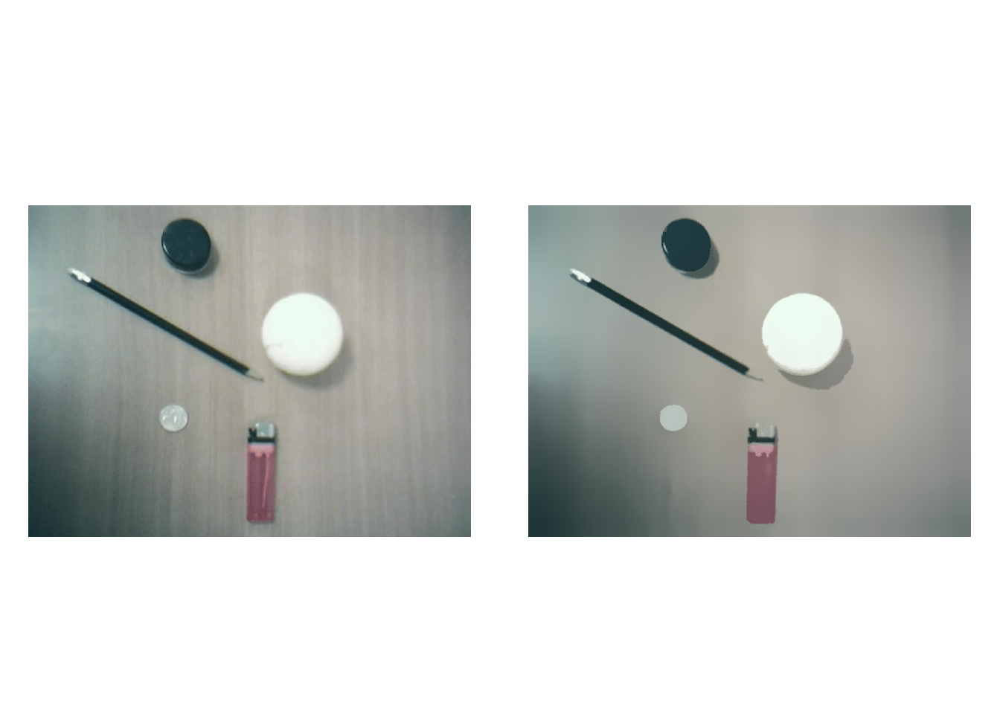
分割出来的每一块区域颜色都是常数，所以可以用 floodFill 把它们一块一块地
涂成随机颜色——这就是「分色显示」。
cv_floodFill() 的掩码有个固定约定：必须比图像大 2 像素，
真正的像素 \((x,y)\) 对应掩码的 \((y+1, x+1)\)。掩码里非 0 表示「这个像素已经处理过」。
h = dim(ms)[1]
w = dim(ms)[2]
#掩码比图像大 2 像素，这是 floodFill 的硬性要求
mask = Mat(h+2,w+2,CV_8UC1)
#在副本上涂色
img_col = cv_copyTo(ms)
n_reg = 0
repeat{
marr = as_array(mask,numeric = TRUE)
#找出还没处理过的像素。注意先裁掉掩码的 1 像素边框
todo = which(marr[2:(h+1),2:(w+1)] == 0,arr.ind = TRUE)
if(nrow(todo) == 0) break
#arr.ind 给的是 (行, 列)，而 floodFill 要的是 (x, y)
#而且这里还差一个边框偏移：掩码 (i+1, j+1) 才对应图像 (x=j, y=i)
seed = c(todo[1,2]-1,todo[1,1]-1)
#每个区域一个随机颜色
col = sample(0:255,3,replace = TRUE)
#loDiff/upDiff 是「颜色差多少以内算同一块」，要和 sr 大致匹配
r = cv_floodFill(img_col,mask,seed,col,c(10,10,10),c(10,10,10),4)
#floodFill 返回新的 image 和 mask，必须接住
img_col = r$image
mask = r$mask
n_reg = n_reg + 1
}
n_reg## [1] 1766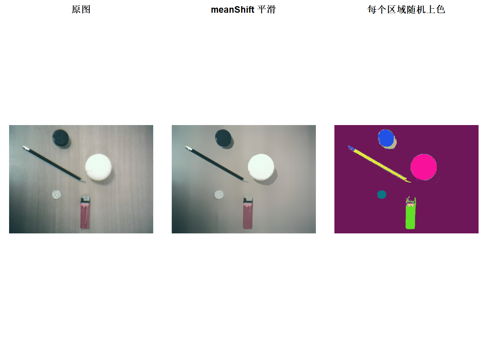
可以通过滑动条交互调整 sp、sr：
meanshift_seg = function(val){
spatialRad = cv_getTrackbarPos("spatialRad","dst")
colorRad = cv_getTrackbarPos("colorRad","dst")
maxPyrLevel = cv_getTrackbarPos("maxPryLevel","dst")
out = cv_pyrMeanShiftFiltering(src,spatialRad,colorRad,maxPyrLevel)
cv_imshow("dst",out)
}
cv_namedWindow("src",WINDOW_AUTOSIZE)
cv_namedWindow("dst",WINDOW_AUTOSIZE)
cv_imshow("src",src)
cv_imshow("dst",src)
cv_createTrackbar("spatialRad", "dst",19,80,meanshift_seg)
cv_createTrackbar("colorRad", "dst",22,60,meanshift_seg)
cv_createTrackbar("maxPryLevel","dst", 2, 5,meanshift_seg)
#三条都在了，先算一次
meanshift_seg(0)12.5 CamShift 目标跟踪
CamShift（Continuously Adaptive Mean Shift）是 MeanShift 的连续版本： 用目标的颜色直方图做反向投影，得到一张「这个像素有多像目标」的概率图， 再让窗口往概率高的方向滑，并且自动调整窗口大小。
流程固定三步：取目标区域 → 建直方图 → 每帧在反向投影图上跑 CamShift。
12.5.1 先说清楚：什么样的目标能被跟住
CamShift 唯一的依据是颜色。所以它有一个硬性前提：目标的颜色分布要和背景分得开。
拿 video/slow.flv 里那辆白车试一下就知道了。白车和路面都是低饱和度的灰白色，
色调（H 通道）对它们来说基本是噪声：
cap = cvVideoCapture("video/slow.flv")
f0 = cap$read()
cap$release()
hsv0 = cv_cvtColor(f0,COLOR_BGR2HSV)
#白车在第一帧的大致位置
car_win = c(300,195,105,85)
hsv_car = cv_mat_roi(hsv0,car_win)
#用车身区域建 H 通道直方图，再做反向投影
hist_car = cv_calcHist(list(hsv_car),0L,NULL,180L,c(0,180))
cv_normalize(hist_car,hist_car,0,255,NORM_MINMAX)## <cvMat> 1 x 180, CV_32FC1, 1 channelsbp_car = cv_calcBackProject(list(hsv0),0L,hist_car,c(0,180),1)
#反向投影里有多少像素被点亮了？
mean(as_array(bp_car,numeric = TRUE) > 0)## [1] 0.6856结果是 0.965——整幅图 96.5% 的像素都被判成「像白车」。这样的概率图没有 任何「峰」可爬，CamShift 只会把窗口越撑越大，几十帧之后框住半个画面。
换 S 通道（0.752）或 V 通道（1.000）也一样：白车和路面在这些维度上根本没差别。
结论：当目标和背景在某个颜色维度上可分时，可以使用CamShift 进行跟踪， 否则要用别的方法（背景减除、光流、或者检测器逐帧给框）。
12.5.2 一个能跟住的例子
为了把机制讲清楚，这里用一段合成序列：背景是一张真实照片（有纹理、有干扰物）， 上面叠一个蓝色圆盘，让它沿弧线移动、半径缓慢变化。蓝色在 HSV 里和背景的 木纹色差得很远，正好满足「可分」这个前提。
好处是真值已知，可以定量检验跟踪得准不准。
#背景：真实纹理图缩到 480×270
bg = cv_resize(cv_imread("images/stuff.jpg"),c(480,270))
N = 60
truth = matrix(NA_real_,N,2) #圆盘真实圆心
radius = rep(20,N) #圆盘真实半径
#第 k 帧：把圆盘画在背景上
make_frame = function(k){
cx = 80 + 6*k
cy = 180 - 60*sin(k/N*pi)
r = 20 + 6*sin(k/N*2*pi)
truth[k,] <<- c(cx,cy)
radius[k] <<- r
img = cv_copyTo(bg)
cv_circle(img,c(cx,cy),r,c(255,0,0),-1) #BGR，纯蓝
img
}
f1 = make_frame(1)
dim(f1)## [1] 270 480 3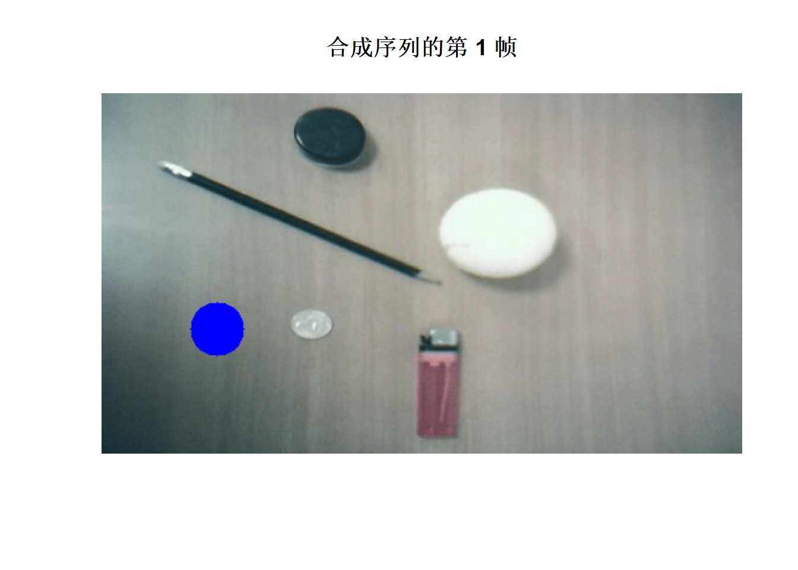
第一步：确定初始框。 第一帧圆盘的圆心是 truth[1,]，半径 radius[1]，
框稍微放大两像素：
## [1] 63.37 154.23 45.25 45.25第二步：在目标区域上建直方图。
#取出目标区域
roi = cv_mat_roi(f1,win)
#转 HSV
hsv_roi = cv_cvtColor(roi,COLOR_BGR2HSV)
#只用 H（色调）通道：蓝色集中在一个很窄的 bin 里
roi_hist = cv_calcHist(list(hsv_roi),0L,NULL,180L,c(0,180))
#归一化到 0-255，反向投影才有意义
cv_normalize(roi_hist,roi_hist,0,255,NORM_MINMAX)## <cvMat> 1 x 180, CV_32FC1, 1 channels#直方图里权重最高的 bin 就是目标的色调
hist_v = as.vector(as_array(roi_hist,numeric = TRUE))
which.max(hist_v) - 1 #bin 下标是 0 基## [1] 120第三步：逐帧跟踪。
est = matrix(NA_real_,N,2) #CamShift 估计的圆心
est[1,] = c(win[1]+win[3]/2,win[2]+win[4]/2)
for(k in 1:N){
img = make_frame(k)
#反向投影：每个像素的值 = 它的色调落在目标直方图里的权重
bp = cv_calcBackProject(list(cv_cvtColor(img,COLOR_BGR2HSV)),0L,roi_hist,c(0,180),1)
#CamShift：窗口滑向概率重心，并自动调整大小
cs = cv_CamShift(bp,win,c(3,10,1))
#value 是 c(cx, cy, w, h, angle)，window 是下一轮的输入框
est[k,] = cs$value[1:2]
win = cs$window
}
#和真值比一比
err = sqrt((est[,1]-truth[,1])^2 + (est[,2]-truth[,2])^2)
c(mean_err = round(mean(err),2),max_err = round(max(err),2))## mean_err max_err
## 0.52 1.34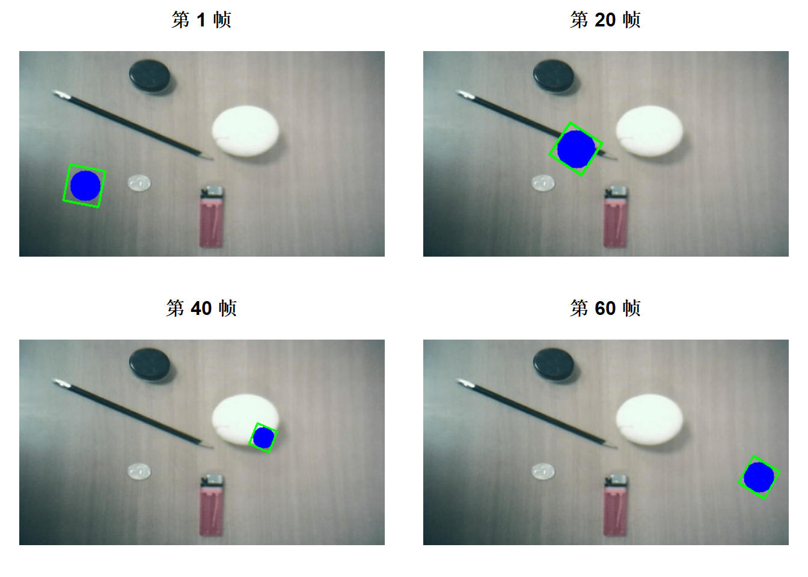
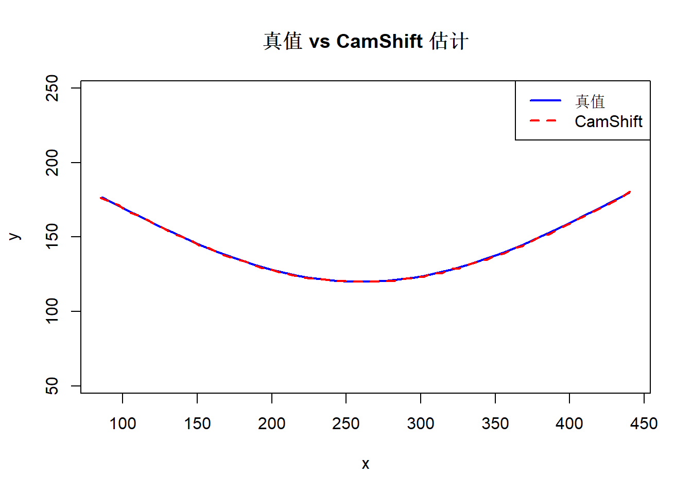
平均误差不到 1 像素，说明机制是对的：窗口确实在爬反向投影的峰， 而且框的大小也跟着圆盘半径变了——这正是 CamShift 比 MeanShift 多的那个 「Adaptive」：每轮用窗口内概率分布的零阶矩和一阶矩重新算宽高。
cv_CamShift()返回list(value, window)：
value是旋转矩形c(cx, cy, w, h, angle)，用来画图；window是正矩形c(x, y, w, h)，用来喂下一轮。这两个不能混用：把
value直接当下一轮的窗口传进去，长度不对，会报错。 想要value的四个角点，cv_boxPoints(value)。
criteria是长度 3 的数值向量c(type, maxCount, eps)，不再是TermCriteria()对象。EPS + COUNT = 3，所以c(3,10,1)的意思是 「最多迭代 10 次，或者窗口移动小于 1 像素就停」。
真实视频上的完整写法（一边播一边跟）就是这样，把 make_frame() 换成
cap$read() 即可。
cap = cvVideoCapture("video/slow.flv")
frame = cap$read()
pauseTime = 1000/cap$get(CAP_PROP_FPS)
#第一帧：手动框住目标，建直方图
win = c(300,195,105,85)
roi = cv_mat_roi(frame,win)
roi_hist = cv_calcHist(list(cv_cvtColor(roi,COLOR_BGR2HSV)),0L,NULL,180L,c(0,180))
cv_normalize(roi_hist,roi_hist,0,255,NORM_MINMAX)
repeat{
frame = cap$read()
if(prod(dim(frame)) == 0) break
bp = cv_calcBackProject(list(cv_cvtColor(frame,COLOR_BGR2HSV)),
0L,roi_hist,c(0,180),1)
cs = cv_CamShift(bp,win,c(3,10,1))
win = cs$window
#把旋转矩形画成四条边
cn = matrix(as_array(cv_boxPoints(cs$value),numeric = TRUE),ncol = 2)
for(i in 1:4)
cv_line(frame,cn[i,],cn[if(i == 4) 1 else i+1,],c(0,255,0),2)
cv_imshow("CamShift",frame)
if(cv_waitKey(pauseTime) == 27) break
}
cap$release()12.6 光流
光流估计的是「每个像素从上一帧到这一帧移动了多少」。有两种做法： 稀疏光流只跟踪若干特征点，稠密光流给每个像素都算一个位移向量。
12.6.1 稀疏光流：Lucas-Kanade
LK 只跟踪若干特征点，所以第一步是选点。这里有个讲究：goodFeaturesToTrack()
默认挑「最响」的角点，而在这种固定机位的监控画面里，最强的角点全在建筑、路牌、
三脚架上——它们一动不动，算出来的光流全是 0。
所以先借用上一节的背景减除结果，把选点范围限制在前景掩码里：
cap = cvVideoCapture(vid_file)
#先用 MOG2 跑到第 100 帧，拿到这一帧的前景掩码
mog_flow = cv_createBackgroundSubtractorMOG2(history = 500,varThreshold = 16,
detectShadows = FALSE)
for(k in 1:100){
old_frame = cap$read()
fg_flow = mog_flow$apply(old_frame,-1)
}
#再往后读 5 帧，作为「新帧」
for(k in 1:5) frame = cap$read()
cap$release()
#掩码膨胀一圈，给角点检测留点余量
disk = cv_getStructuringElement(MORPH_ELLIPSE,c(7,7))
fg_flow = cv_dilate(fg_flow,disk)
old_gray = cv_cvtColor(old_frame,COLOR_BGR2GRAY)
gray = cv_cvtColor(frame, COLOR_BGR2GRAY)#第 5 个参数是 mask：只在掩码非 0 的位置找角点
p0 = cv_goodFeaturesToTrack(old_gray,60L,0.01,10,fg_flow,3L,3L,FALSE,0.04)
dim(p0)## [1] 60 1 2#LK 金字塔光流：在 old_gray 里找 p0，去 gray 里找它们的新位置
lk = cv_calcOpticalFlowPyrLK(old_gray,gray,p0,NULL,c(15,15),2,c(3,10,0.02))
names(lk)## [1] "nextPts" "status" "err"c(nextPts = paste(dim(lk$nextPts),collapse = "x"),
status = paste(dim(lk$status), collapse = "x"),
err = paste(dim(lk$err), collapse = "x"))## nextPts status err
## "60x1x2" "60x1" "60x1"#摊成 n×2
p0_xy = matrix(as_array(p0, numeric = TRUE),ncol = 2)
p1_xy = matrix(as_array(lk$nextPts,numeric = TRUE),ncol = 2)
st = as.vector(as_array(lk$status,numeric = TRUE))
#位移长度
shift = sqrt((p1_xy[,1]-p0_xy[,1])^2 + (p1_xy[,2]-p0_xy[,2])^2)
#三层过滤：
# 1) status == 1 这一帧里还找得到
# 2) shift > 1 几乎没动的不要（画出来全是短线）
# 3) shift < 30 跳得太远的多半是匹配错了
moving = st == 1 & shift > 1 & shift < 30
c(found = sum(st == 1),kept = sum(moving),
median_shift = round(median(shift[moving]),1))## found kept median_shift
## 60.0 21.0 12.6#在原图副本上画：黄线是位移，红点是新位置
vis_flow = cv_copyTo(frame)
for(i in which(moving)){
cv_line(vis_flow,p0_xy[i,],p1_xy[i,],c(0,255,255),2)
cv_circle(vis_flow,p1_xy[i,],4,c(0,0,255),-1)
}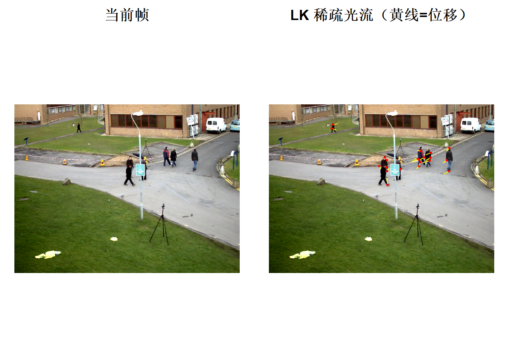
cv_calcOpticalFlowPyrLK()返回list(nextPts, status, err)，三个都是cvMat。status是n×1的CV_8U，1 表示找到、0 表示跟丢了（出界、被遮挡、 纹理消失）。必须按 status 过滤，否则跟丢的点会被算成 (0,0)， 画出来是一堆指向左上角的假位移。第三个过滤条件
shift < 30是实践里加的。LK 在纹理重复的区域（比如栏杆、 地砖）会把点匹配到错误的位置，位移一下子跳到上百像素。这类点画出来是横穿 画面的长线，一眼就能看出来是错的。
12.6.2 稠密光流：Farneback
#pyr_scale, levels, winsize, iterations, poly_n, poly_sigma, flags
flow = cv_calcOpticalFlowFarneback(old_gray,gray,NULL,0.5,3,15,3,5,1.2,0)
c(dim = paste(dim(flow),collapse = "x"),depth = mat_info(flow)[5])## dim depth
## "576x768x2" "5"flow 是双通道的 CV_32F：通道 0 是 x 方向位移，通道 1 是 y 方向位移。
把它转成「幅值 + 方向」，再用 HSV 上色，是可视化光流的经典做法：
#拆成两个单通道
planes = cv_split(flow)
#笛卡尔 (dx, dy) → 极坐标 (幅值, 角度)
polar = cv_cartToPolar(planes[[1]],planes[[2]])
mag = as_array(polar$magnitude,numeric = TRUE)
ang = as_array(polar$angle, numeric = TRUE)
c(mag_max = round(max(mag),2),angle_range = paste(round(range(ang),2),collapse = " ~ "))## mag_max angle_range
## "25.13" "0 ~ 6.28"#HSV 上色：H = 方向，S = 255，V = 幅值
hsv_arr = array(0,dim = c(dim(mag),3))
#角度是弧度 0~2π。8 位图的 H 只有 0~180，所以要除以 2
hsv_arr[,,1] = round(ang*180/pi/2)
hsv_arr[,,2] = 255
#幅值归一化到 0~255，否则动得慢的地方全黑
hsv_arr[,,3] = round(255*mag/max(mag))
hsv_img = Mat(dim(mag)[1],dim(mag)[2],CV_8UC3)
hsv_img[] = hsv_arr
#OpenCV 的 imshow 认 BGR，不认 HSV
flow_bgr = cv_cvtColor(hsv_img,COLOR_HSV2BGR)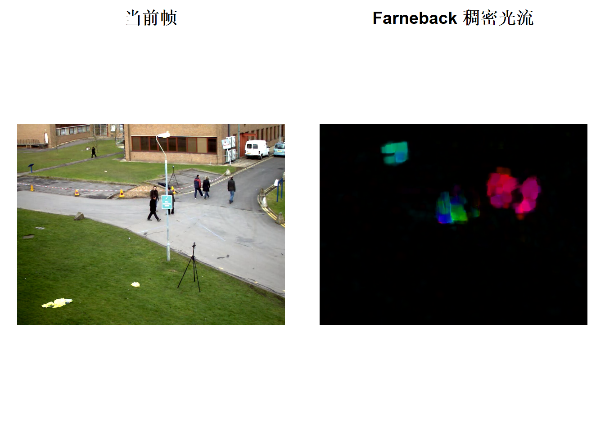